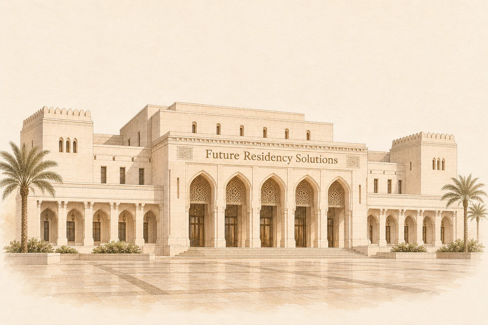

پالایش فلزات گرانبها
پالایش را در مجموعهٔ خود انجام میدهیم تا بر عیار و کیفیت فلز مورد استفاده در تولید نظارت داشته باشیم. فعالیت این واحد به تأمین نیازهای تولیدی خود مجموعه اختصاص دارد.
در موریاتی، دانش پالایش، دقت آزمایشگاهی و مهارت ساخت در کنار یکدیگر قرار میگیرند. پالایش فلزات گرانبها، کنترل عیار، ریختهگری، ضرب و تولید مواد پیشرفته، بخشی از توانمندیهای مجموعهاند؛ توانمندیهایی که با طراحی و ساخت تجهیزات اختصاصی توسعه یافتهاند.
فعالیتهای صنعتی موریاتی در ایران، در چارچوب شرکت پالایش و تولید فلزات گرانبهای مهربان انجام میشود.
طراحی و ساخت تجهیزات پالایشگاهی، از توانمندیهای اصلی موریاتی است. تمامی تجهیزات فرایندی پالایشگاه، بر پایهٔ طراحی اختصاصی مجموعه و بهصورت سفارشی در داخل سازمان ساخته شدهاند.
ایدهپردازی، تحقیق و توسعه، طراحی مهندسی، ساخت، راهاندازی و توسعهٔ تجهیزات را تیمهای تخصصی خود مجموعه بر عهده دارند. این دانش فنی، امکان ساخت تجهیزات متناسب با نیاز هر فرایند و توسعهٔ روشهای اختصاصی پالایش را فراهم میکند.
خطوط پالایش فلزات گرانبها و کورههای القایی، از محصولات دانشبنیان مجموعهاند.
مجموعه دارای بیش از ۱۰ ثبت اختراع داخلی و بینالمللی است. تحقیق و توسعه، بخشی مستمر از فعالیت موریاتی است و در طراحی تجهیزات، بهبود فرایندهای تولید و توسعهٔ محصولات تازه ادامه دارد.
توان تولید موریاتی، مواد پیشرفته را نیز در بر میگیرد. خمیر نقره بر پایهٔ نقره با خلوص ۹۹٫۹۹ درصد و نانوپودر طلا با خلوص ۹۹٫۹۹ درصد، از محصولات این بخشاند.
خلوص نقرهٔ پایه: ۹۹٫۹۹ درصد
خلوص طلا: ۹۹٫۹۹ درصد
کنترل خلوص و مشخصات فنی، بخشی از فرایند تولید این مواد است.
مجموعه توان تولید ساچمه، گرانول و پودر فلزات گرانبها را با عیارهای مختلف دارد. مشخصات هر محصول، متناسب با کاربرد و نیاز تولید تعیین میشود.
در بخش معدنی مجموعه، استحصال فلزات از خاک و مواد معدنی انجام میشود. این فعالیت، بخشی از دانش و تجربهٔ مجموعه در بازیابی و فرآوری فلزات است.
در سفارشهای اختصاصی، طراحی هنری و بستهبندی متناسب با هویت سفارشدهنده و مناسبت ارائه انجام میشود. مشخصات فنی شمشها نیز مطابق مشخصات مصوب هر مجموعه حفظ میشود.
این امکان برای سفارشهای سازمانی، یادبودها، مناسبتها و سفارشهای شخصی فراهم است.
فعالیتهای بازرگانی مجموعه، واردات و صادرات در حوزهٔ فلزات گرانبها و صنایع مرتبط را نیز در بر میگیرد.
مجموعه دارای گواهینامههای زیر است:
مجموعه دارای مجوزها و پروانههای زیر است:
طراحی و ساخت تجهیزات پالایشگاهی و کورههای القایی مجموعه، مطابق استانداردهای زیر انجام میشود:
پروتوتایپ طراحی — گواهیها و مجوزها با فرض برخورداری مجموعه درج شدهاند.
میراث مشترک خانوادهٔ مهربان، پشتوانهٔ دو ساختار مستقل است؛ فعالیتهای صنعتی موریاتی در ایران و سرمایهگذاریهای مهربان اینترپرایس در خارج از کشور.
مهربان اینترپرایس (Mehraban Enterprise) با رویکرد سرمایهگذاری جسورانه و با مرکزیت امارات، شرکتها و سرمایهگذاریهای خارج از کشور خانواده را مدیریت میکند. این ساختار از مجموعهٔ ایرانی مستقل است و مالکیت مشترک آنها به خانوادهٔ مهربان تعلق دارد.
ضربخانهٔ سلطنتی خلیج (Khalij Royal Mint)، بازوی پالایش و تولید مجموعه در مسقطِ عمان است. حق استفاده از این برند در اختیار مجموعهٔ مهربان اینترپرایس است. این مجموعه با پالایشگاه کامل فلزات گرانبها و امکانات تولید طلا و نقره فعالیت میکند و بخشی از ساختار بینالمللی مهربان اینترپرایس به شمار میرود.
khalijroyalmint.comدفتر مرکزی مهربان اینترپرایس در دبی، امارات قرار دارد و مرکز هماهنگی فعالیتهای بینالمللی مجموعه است. مدیریت شرکتها و سرمایهگذاریهای خارج از کشور خانوادهٔ مهربان، با رویکرد سرمایهگذاری جسورانه، از این مرکز انجام میشود؛ ساختاری مستقل از فعالیتهای صنعتی موریاتی در ایران.
دارالسلام در تانزانیا، یکی از پایگاههای مجموعه برای تأمین مواد خام است. شرکت مستقر در این کشور، نیازهای تأمین مواد اولیهٔ فعالیتهای خارج از کشور را در چارچوب مهربان اینترپرایس دنبال میکند؛ بخشی از زنجیرهٔ بینالمللی مجموعه.
فعالیت مجموعه در شنژنِ چین، تأمین فناوری، تجهیزات و مواد اولیه را در بر میگیرد. بازرگانی و خریدوفروش در بورس شانگهای نیز از طریق شرکت مستقر در امارات انجام میشود؛ پیوندی میان نیازهای فنی و تولیدی و شبکهٔ بازرگانی بینالمللی مجموعه.
فعالیت مجموعه در ژنوِ سوئیس، به مدیریت خزانه و امور بانکی بینالمللی مهربان اینترپرایس اختصاص دارد. این فعالیتها بخشی از ساختار خارج از کشور خانوادهٔ مهرباناند و در چارچوب همان ساختار مستقل از مجموعهٔ ایرانی دنبال میشوند.
فعالیت مجموعه در تورنتوی کانادا، در حوزهٔ جواهرات و برندهای وابسته به آن دنبال میشود. این بخش در ساختار بینالمللی مهربان اینترپرایس قرار دارد و همراه با شرکتهای آمریکا، بخشی از فعالیتهای جواهرات خانوادهٔ مهربان را پیش میبرد.
فعالیت مجموعه در ایالت دلاورِ آمریکا بر جواهرات و توسعهٔ برندهای این حوزه متمرکز است. این شرکتها زیرمجموعهٔ ساختار بینالمللی مهربان اینترپرایساند و در کنار فعالیتهای کانادا، حضور خانوادهٔ مهربان را در حوزهٔ جواهرات شکل میدهند.

فیوچر رزیدنسی سولوشنز، یکی از شرکتهای زیرمجموعهٔ مهربان اینترپرایس است. این شرکت فعالیتهای مجموعه در حوزهٔ املاک و مستغلات را مدیریت میکند؛ از ساختوساز و توسعهٔ پروژههای ملکی تا تأمین مصالح ساختمانی.
برای مشاورهٔ خرید، سفارشهای اختصاصی و هماهنگی مراجعه به دفتر الهیه، راههای ارتباط با موریاتی را ببینید.
مشاهدهٔ راههای ارتباطی